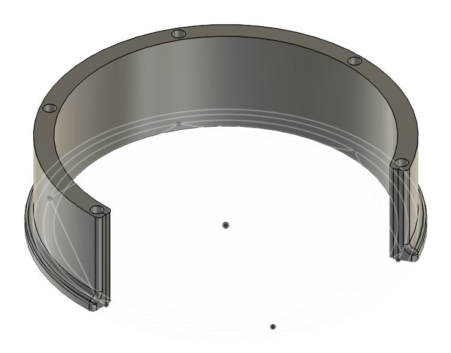
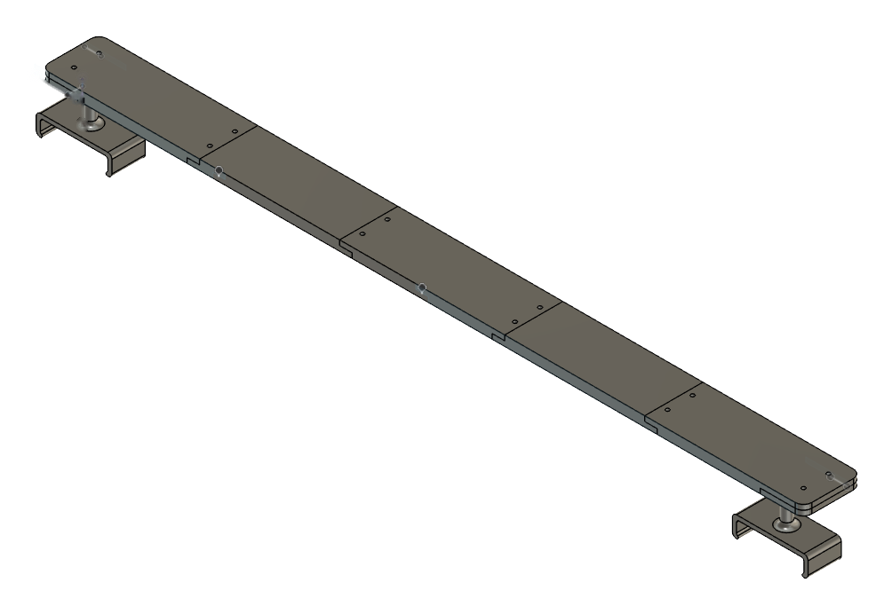

Battery electrode manufacturing · Process integration case study
Process Technology Engineering
Intern · LG Energy Solution · Holland, Michigan · May–August 2026
I worked on laser notching across high-volume anode and cathode production lines, using process conditions, equipment behavior, in-process inspection, production data, and downstream results to trace where variation originated and decide what controlled change to test next. Over a two month period, product defect related downtime on a key production line I supported decreased by about 86%. I monitored the trend through daily production reports and Spotfire data from MES and SPC.
This is a public summary. I left out recipe values, line identifiers, process limits, production metrics and other proprietary data on purpose.
00
How I work through a process problem
I look across process steps to understand where variation begins, how it propagates, and which changes make the overall process more stable. Everything on this page is one example of the chain below. The equipment and materials were different from a semiconductor fab, but the integration problem was familiar: understand how variation moves across process steps, determine where it begins, and verify the effect of a change downstream.
Fig. 1 The chain I followed on the laser notching lines. Gray boxes are steps, blue is the key point and green is the result.
01
Reading the line every morning
I started each day with the problems from the previous shift. Then I put production trends, inspection results, alarm history and downstream feedback side by side to decide where the variation most likely began and what to test next.
Fig. 2 The seven steps I repeated each day. Anything that did not hold went back on the list for the next morning.
Production review
I reviewed the previous day's issues, suspected causes and open Process of Record items.
I went through Spotfire views and SPC data for repeated breakage, miscuts, downtime and abnormal shifts.
I made a short list of what needed deeper work or a follow up the same day.
Tracing the source
I looked at defect images and in-process vision footage to see how an event physically developed.
I compared alarm timing and line history across handling, laser processing, inspection and downstream.
I looked at conditions just before and after, to separate where an event became visible from where it began.
Action and verification
I sent the daily defect summary to the relevant engineering and production teams.
I met with engineers or vendors to agree on the next test.
I went back to the line for controlled trials and sample inspection, then compared the result with the production that followed.
I counted a corrective action as finished only when the expected response showed up in the production data and stayed there.
02
Finding where variation begins
A defect is seen at the step that catches it. I compared trends, equipment history, alarms, inspection evidence and the conditions before and after to work out which step, tool or condition came first.
Fig. 3 Where a defect shows up compared with where it may have started, and how I worked from one to the other.
How I narrowed it down
I compared miscuts, breakage and downtime to find patterns that repeat, instead of one-off events.
I used alarm timing, in-process inspection evidence and line history to narrow down where in the flow the failure developed.
I checked upstream and downstream conditions, since the place where the line stops is not always where the problem began.
I compared abnormal events with recent process changes, equipment conditions and material behavior.
I watched the production and quality data after a fix to confirm the improvement held.
A pattern I looked for: mechanical variation
A shift in the material path can destabilize the web, cause breakage or cracking, and disturb the material further along the line. That raises the risk of downstream defects such as miscuts.
For these events I used line history, alarms, equipment data and what I could see in the footage. I looked at where the event developed, whether upstream, in the process section or downstream, and compared the mechanical event with the miscuts that followed to see whether the two were linked.
I left out the exact downtime numbers and line-specific production data in this public version.
03
Building a stable process window with DOE
On the newer lines the team needed a more stable operating recipe. I helped run the DOE: I changed the laser variables in controlled steps (and airflow, where it mattered), compared the results under the microscope, and checked that one condition stayed acceptable in every operating mode the line needed.
Fig. 4 The DOE sequence, including the focus branch for when power and frequency alone did not help.
Before changing anything
I coordinated with Production, because a DOE needs planned line access and controlled sampling.
I waited for a suitable lot transition before starting.
I cleaned the relevant tooling and collected baseline samples before touching the target recipe.
I sampled several electrode regions to compare cut quality across the part.
Searching the parameters
I started from a known production condition so every change had a baseline.
I ran a controlled power sweep and checked which way the response went and whether it repeated.
Once a useful range was clear, I ran a frequency study to see the combined effect on the cut edge.
I picked the most stable condition overall instead of chasing the best result on one measure.
When the recipe was not enough
When power and frequency produced no meaningful response, I evaluated focus alignment.
I revalidated the recipe after any focus change, since the result would not necessarily carry over.
I repeated checks at normal production and at the reduced-speed material-change condition.
I finished sample review and qualification verification before sharing results with the responsible engineers and team leads.
I left out operating speeds, parameter steps, focus offsets, recipe values, line identifiers and internal acceptance limits.
04
Balancing cut quality against what comes next
A recipe could cut cleanly and still leave dross, or keep the dross down and cut incompletely. Neither counted, because the next step inherits whatever the cut leaves behind. I looked for one condition that met everything and held in production.
Complete cut
Enough delivered energy for a complete, stable cut without creating a new quality problem.
Insulation quality
I checked insulation protrusion and spatter under the microscope against the criteria.
Dross-free target
I aimed for a clean edge with no dross, not just a number under the limit.
Power was the main control for a reliable complete cut.
Frequency I compared against several quality responses, not one output.
Focus was a secondary variable, used when recipe changes alone did not resolve the issue.
Validation meant the final condition stayed acceptable across the relevant operating modes.
05
Qualifying a process change with downstream evidence
The Assembly team, downstream of the electrode process, reported more tab-related defects than they could accept. We evaluated dual-side tab pressing on the anode line as a controlled change. Equipment and the vendor prepared the setup, Process Technology ran a controlled 4M qualification across multiple lots, and Quality and Assembly reviewed the samples and data.
Fig. 5 Who was involved at each step of the qualification, from the original downstream feedback to the broader implementation plan.
From problem to trial
I heard from Assembly that tab-related defects were happening at a rate they could not accept.
I helped evaluate dual-side tab pressing as a possible improvement.
I worked with Equipment and the vendor to confirm feasibility and prepare the production setup.
We set it up so the trial ran under controlled conditions, not as an informal adjustment.
Qualification and evidence
I helped run 4M testing across multiple production lots with a defined sampling plan.
I collected representative samples and gave the samples and supporting data to Quality.
Quality and Assembly reviewed whether the original defect behavior improved downstream. It did, and broader implementation was planned.
I looked at the downstream defect response, Quality's review and how production behaved, all together, before the change was used more widely.
I left out sample counts, line identifiers, acceptance thresholds, equipment settings and rollout scope. What matters here is how the change was controlled and qualified.
06
Turning data into a shared action list
My daily report gave Process, Equipment, Production, Quality and the downstream teams the same defect history, root cause status and next action list. The proprietary production data stayed internal.
Data I reviewed
Breakage and miscut trends
Defect frequency and downtime
SPC and abnormal trend review
Process shifts and recent line events
Failure tracing
Defect images
Vision footage
Equipment alarms
Event history before and after
What I sent out
Daily defect summary
Major issues and suspected causes
Assigned follow-up actions
POR improvement status
07
Two physical fixes I designed and installed
Some problems on the anode line were better solved with a part than with a setting, because changing one setting fixed one problem and created another. I modeled both parts in CAD and installed them. The sketches show the logic. The CAD views show the shape of each part only, with no dimensions, mounting details or line identifiers.
Fig. 6 Humidity control against tab flutter, and where the cover sits. Abstract sketch, not a drawing.

Fig. 7 The duct cover as I modeled it. Shape only, no dimensions.
The problem
Humidity control relies on airflow through ducts. Newer lines are built differently from older ones, and raising the airflow sent too much air across the tab zone. The tabs started to flutter.
The fix
A cover over the duct that keeps air off the tab zone, with a lower opening that preserves the airflow needed for humidity control. After installation, tab flutter dropped sharply.
I do not have a measured before and after rate I can publish, so this is an observed result, not a quantified one.
Fig. 8 The unloader threading route before and after the guard. Abstract sketch, not a drawing.

Fig. 9 The guard bar as I modeled it: five plates and two end clamps. Shape only, no dimensions.
The problem
At the unloader bobbin during a semi-automatic splice, operators sometimes mixed up the roller direction and ran the web up instead of down. That led to breakage and quality issues that spread to the following steps.
The fix
A bar that blocks the upper route, so only the correct path is open. This is physical error-proofing, or poka-yoke: the guard makes the correct route the only available route, reducing dependence on operator familiarity or time pressure.
No before and after count is published for this one either. The sketch shows the logic of the guard, not its shape.
08
The event I remember most
The production team asked me to look at an uncutting problem on a cathode line, in the zone where the line speeds up. I did not fix it that day. This is how the evidence narrowed the search and what I took from it.
Swipe to view the full diagram →
Fig. 10 How the evidence narrowed the search, from checks that did not respond to the equipment evidence that redirected it.
What I saw
I ran the line and watched where and how the uncutting happened. It kept showing up in the acceleration zone when we tried to run faster, where the cut came out incomplete.
Suction became less likely
To test suction I pulled the cut material off by hand. It would not come away cleanly, which did not support suction as the primary cause and pointed my attention at the laser. I had already varied suction pressure and position earlier.
Process settings did not respond
Power and frequency adjustments did not move the defect, and neither did a focus adjustment.
What the equipment log showed
I then read the laser PC log. It showed that the expected power response was not occurring in the acceleration zone. That did not prove which component had failed, but the lack of response to every process setting moved the investigation away from the recipe and toward the laser's optical and focusing hardware.
How it was handled
I stayed with the issue from the morning into the evening because none of the process adjustments were producing the expected response. Process Technology engineers and people from the vendor joined, and we still could not fix it that day. The next day a laser specialist from the vendor diagnosed and repaired the focusing equipment.
What I learned as an engineer
A quick physical check can narrow the search
Pulling the cut material off by hand took a minute, and it made suction less likely. Before I change any setting, I look for a quick check like that, one that narrows the search without touching the process.
When settings stop answering, go to the equipment evidence
Power, frequency and focus all gave me no response. The laser PC log then showed the expected power response missing in that one zone. If repeated changes do not move the result, I stop assuming the recipe is the cause and go to the equipment's own data.
Finding the direction is not the same as repairing it
I narrowed the investigation to the focusing hardware, and the repair needed a vendor specialist. I would now hand over a clear record of what I tested and what the log showed, so the specialist starts where I stopped.
Know when more testing stops producing information
Once the settings stopped answering, more trials were not telling me anything new. Next time I would set a point in advance for bringing the vendor in.
Why I still remember this event
It stays with me because it was a failure. I put a whole day into it and the team joined, and we still did not fix it. The clue that mattered, the missing power response in the laser log, was something I could have read earlier. That is why I now go to the equipment's data sooner and ask for help sooner.
09
What I took from it
Three habits came out of this work, and each one applies to a process where many steps feed each other.
Think across process steps
A visible defect can be the late result of a process, mechanical, material or equipment condition that started earlier in the flow.
Build and verify the window
DOE worked best when each change had a clear hypothesis, a measurable response and repeatable validation across operating conditions.
Close the loop downstream
A change was not done when the local result looked better. Quality review and downstream behavior were part of the decision.
When a setting cannot fix one problem without creating another, such as airflow against tab flutter, a physical change can. That view of manufacturing as one connected system is what drew me toward process integration.
These are the engineering habits I want to bring into semiconductor manufacturing: connecting process conditions, equipment behavior, inspection data, and downstream results; identifying where variation begins; and qualifying changes with data before they are used more widely.